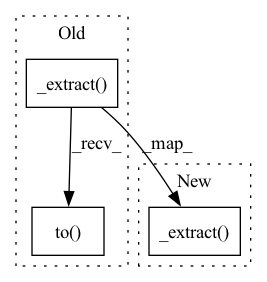

Pattern ID :21137

Before Change
def _pred_x_0_from_mean(self, x_t, mean, t):
ndim = x_t.ndim
coef1 = self._extract(self.posterior_mean_coef1, t, ndim=ndim).to(x_t.device)
coef2 = self._extract(self.posterior_mean_coef2, t, ndim=ndim).to(x_t.device)
return mean / coef1 - coef2 / coef1 * x_t
def _pred_x_0_from_eps(self, x_t, eps, t):
After Change
return model_mean, model_var, model_logvar
def _pred_x_0_from_mean(self, x_t, mean, t):
coef1 = self._extract(self.posterior_mean_coef1, t, x_t)
coef2 = self._extract(self.posterior_mean_coef2, t, x_t)
return mean / coef1 - coef2 / coef1 * x_t
def _pred_x_0_from_eps(self, x_t, eps, t):
In pattern: SUPERPATTERN
Frequency: 4
Non-data size: 3
Instances
Fragment ID: 67782139
Project Name: tqch/ddpm-torch
Commit Name: 4b3268d17bc206dfe7876b0ca247d4c31197175f
Time: 2022-10-16
Author: tqch2020@gmail.com
File Name: ddpm_torch/diffusion.py
M Class Name: GaussianDiffusion
N Class Name: GaussianDiffusion
M Method Name: _pred_x_0_from_mean(4)
N Method Name: _pred_x_0_from_mean(4)
M Parent Class:
N Parent Class:
M File Name: ddpm_torch/diffusion.py
N File Name: ddpm_torch/diffusion.py
M Start Line: 143
M End Line: 145
N Start Line: 140
N End Line: 141
'>
Before Change
noise = torch.randn_like(x_0)
ndim = x_0.ndim
coef1 = self._extract(self.sqrt_alphas_bar, t, ndim=ndim).to(x_0.device)
coef2 = self._extract(self.sqrt_one_minus_alphas_bar, t, ndim=ndim).to(x_0.device)
return coef1 * x_0 + coef2 * noise
def q_posterior_mean_var(self, x_0, x_t, t):
ndim = x_0.ndim
After Change
if noise is None:
noise = torch.randn_like(x_0)
coef1 = self._extract(self.sqrt_alphas_bar, t, x_0)
coef2 = self._extract(self.sqrt_one_minus_alphas_bar, t, x_0)
return coef1 * x_0 + coef2 * noise
def q_posterior_mean_var(self, x_0, x_t, t):
posterior_mean_coef1 = self._extract(self.posterior_mean_coef1, t, x_0)
'>
Fragment ID: 67782143
Project Name: tqch/ddpm-torch
Commit Name: 4b3268d17bc206dfe7876b0ca247d4c31197175f
Time: 2022-10-16
Author: tqch2020@gmail.com
File Name: ddpm_torch/diffusion.py
M Class Name: GaussianDiffusion
N Class Name: GaussianDiffusion
M Method Name: q_sample(4)
N Method Name: q_sample(4)
M Parent Class:
N Parent Class:
M File Name: ddpm_torch/diffusion.py
N File Name: ddpm_torch/diffusion.py
M Start Line: 93
M End Line: 95
N Start Line: 94
N End Line: 95
'>
Before Change
def q_posterior_mean_var(self, x_0, x_t, t):
ndim = x_0.ndim
posterior_mean_coef1 = self._extract(self.posterior_mean_coef1, t, ndim=ndim).to(x_0.device)
posterior_mean_coef2 = self._extract(self.posterior_mean_coef2, t, ndim=ndim).to(x_0.device)
posterior_mean = posterior_mean_coef1 * x_0 + posterior_mean_coef2 * x_t
posterior_var = self._extract(self.posterior_var, t, ndim=ndim)
posterior_logvar = self._extract(self.posterior_logvar_clipped, t, ndim=ndim).to(x_0.device)
return posterior_mean, posterior_var, posterior_logvar
After Change
def q_posterior_mean_var(self, x_0, x_t, t):
posterior_mean_coef1 = self._extract(self.posterior_mean_coef1, t, x_0)
posterior_mean_coef2 = self._extract(self.posterior_mean_coef2, t, x_0)
posterior_mean = posterior_mean_coef1 * x_0 + posterior_mean_coef2 * x_t
posterior_var = self._extract(self.posterior_var, t, x_0)
posterior_logvar = self._extract(self.posterior_logvar_clipped, t, x_0)
return posterior_mean, posterior_var, posterior_logvar
'>
Fragment ID: 67782141
Project Name: tqch/ddpm-torch
Commit Name: 4b3268d17bc206dfe7876b0ca247d4c31197175f
Time: 2022-10-16
Author: tqch2020@gmail.com
File Name: ddpm_torch/diffusion.py
M Class Name: GaussianDiffusion
N Class Name: GaussianDiffusion
M Method Name: q_posterior_mean_var(4)
N Method Name: q_posterior_mean_var(4)
M Parent Class:
N Parent Class:
M File Name: ddpm_torch/diffusion.py
N File Name: ddpm_torch/diffusion.py
M Start Line: 99
M End Line: 104
N Start Line: 99
N End Line: 103
'>
Before Change
def _pred_x_0_from_eps(self, x_t, eps, t):
ndim = x_t.ndim
coef1 = self._extract(self.sqrt_recip_alphas_bar, t, ndim=ndim).to(x_t.device)
coef2 = self._extract(self.sqrt_recip_m1_alphas_bar, t, ndim=ndim).to(x_t.device)
return coef1 * x_t - coef2 * eps
// === sample ===
After Change
def _pred_x_0_from_eps(self, x_t, eps, t):
coef1 = self._extract(self.sqrt_recip_alphas_bar, t, x_t)
coef2 = self._extract(self.sqrt_recip_m1_alphas_bar, t, x_t)
return coef1 * x_t - coef2 * eps
// === sample ===
'>
Fragment ID: 67782146
Project Name: tqch/ddpm-torch
Commit Name: 4b3268d17bc206dfe7876b0ca247d4c31197175f
Time: 2022-10-16
Author: tqch2020@gmail.com
File Name: ddpm_torch/diffusion.py
M Class Name: GaussianDiffusion
N Class Name: GaussianDiffusion
M Method Name: _pred_x_0_from_eps(4)
N Method Name: _pred_x_0_from_eps(4)
M Parent Class:
N Parent Class:
M File Name: ddpm_torch/diffusion.py
N File Name: ddpm_torch/diffusion.py
M Start Line: 149
M End Line: 151
N Start Line: 145
N End Line: 146